One lot, from fabric to finished
Every lot follows this road. Each stop has one person who does it, and the next stop starts from what they recorded. Nothing is typed twice.
Fabric comes in
Rolls are received by invoice. Each roll gets a number and a QR label.
StoreCut into bundles
The lot is cut from chosen rolls. Every bundle gets a number and a slip.
Cutting masterGive out
Scan the slip, pick the karigar, count the pieces. A challan prints.
SupervisorTake back
Counted as good, rejected, rework and short. The receiver's count is the truth.
SupervisorClose the day
A short handover note. What is still out, what is late, what is short.
SupervisorPay
Wages come from accepted pieces at the lot's rate. Advances and payments are kept per karigar.
Munshi · ManagerReady stock
Finished garments are counted in. Sold, dispatched or sampled pieces go out.
StoreApprove and watch
Charges and write-offs are decided. Cost per good piece shows for every lot.
Manager · Owner01Six people, six first screens
Each person opens on the page their work is on. What each can do is a list of permissions the owner can change on the Team and Roles screens; this guide shows the six roles as they are set up on day one.
Owner
Sees everything, decides what is above the manager's limit, and sets the factory up.
- 1Open TodayGiven out, taken back, good, short, what is late, how many requests wait for a decision. Pick any earlier day from the date box.
- 2Decide what is waitingApprovals shows each request with who asked and why. Anything above the manager's limit says Needs the owner. Approve or decline.
- 3Read the moneyLot reports and each lot's cost panel: fabric, wages, other costs, cost per good piece. Download Excel or print to PDF.
- 4Look after peopleTeam: add a person in one sheet with role, stages, language and a temporary password. Reset a password, set who is away, switch someone off.
- 5Set up once, then adjustSet up the factory walks you from the challan heading to the first lot. Production settings hold stages, reasons, cost categories and the manager's limits.
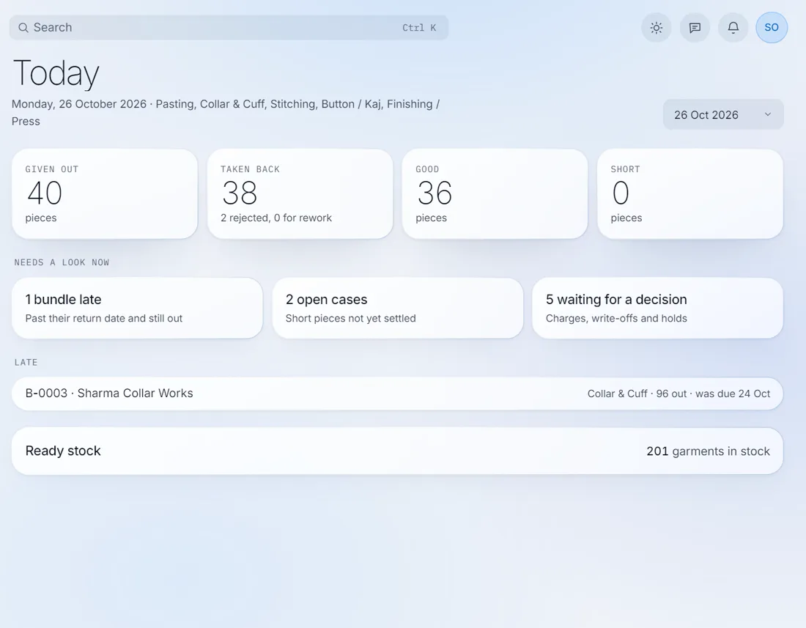
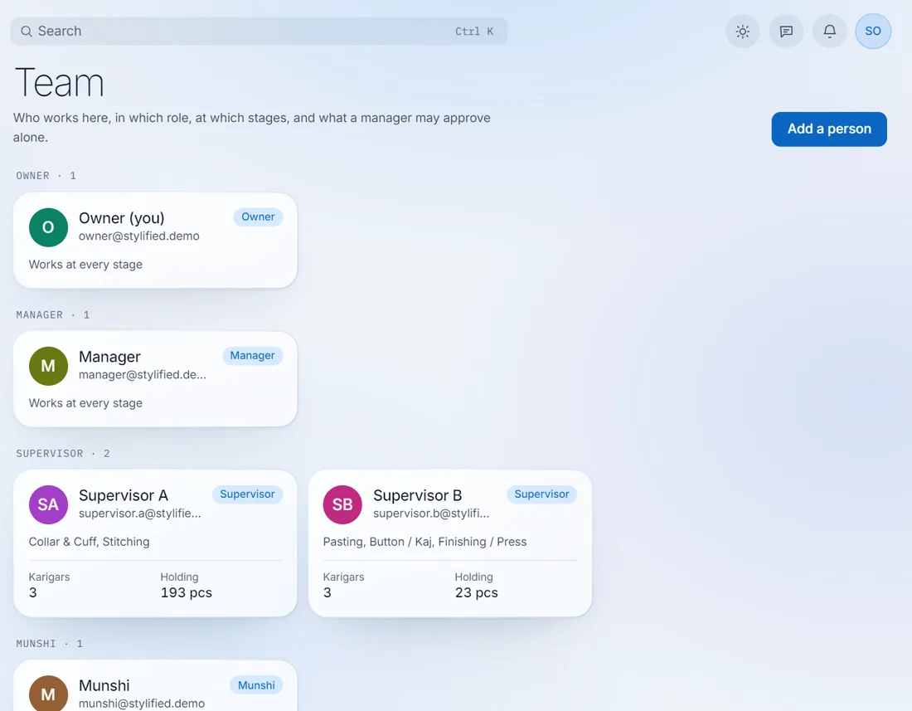
Can
- Add, change and switch off people and roles
- Approve any charge, write-off, hold or lot close
- Set rates, manager limits, stages and settings
- Record every payment, advance and recovery
- See every report, the cost of every lot and the change history
- Join lots so one carries part of the other's cost
Cannot, by design
- Edit or delete a posted entry. It is reversed, with a reason, and both rows stay
- Change a closed lot. Extra work goes on a new lot
- Decide a request they asked for themselves
The change history lists who did what and when, newest first. Open it before you ask anyone "who changed this?".
Manager
Runs lots, fabric, karigars and payments day to day, and approves within the limits the owner sets.
- 1Start with Today and the dashboardLate bundles, open cases, pieces held by each karigar, and the lots in work.
- 2Clear ApprovalsApprove or decline within the limit (for example ₹1,000 or 5 pieces). Above it the button is greyed and says Needs the owner.
- 3Run the lotsSet a lot's rate card, start, hold or complete it, cut it, and print its slips. Close a lot within your limit.
- 4Keep karigars paidRecord advances, recoveries and payments. Every karigar has a clear account with the opening balance.
- 5Watch the costAdd thread, buttons or packing to a lot, or split one bill across lots by pieces cut. Join two lots when they are finished as one.
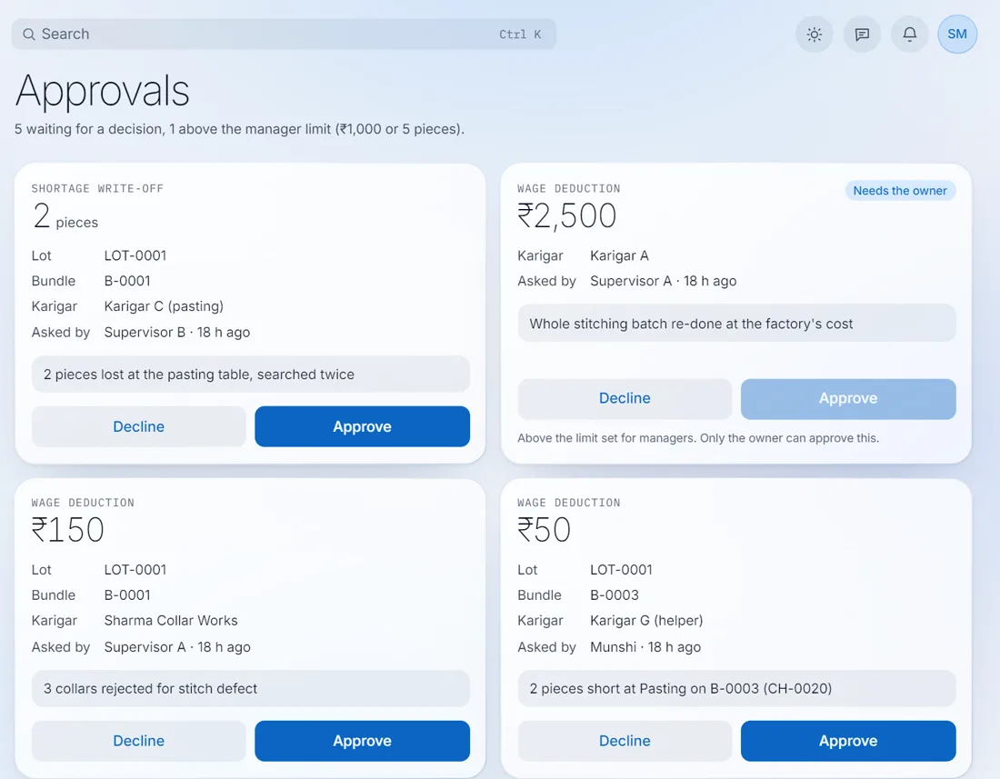
Can
- Everything on lots, bundles, fabric and karigars
- Give out, take back and reverse any entry with a reason
- Record wages, advances and payments
- Take stock out of ready stock and correct a count
- See lot costing, every report and the change history
Cannot
- Approve above the limit. It goes to the owner
- Add people, change roles or change the limits
- Change production settings (view only)
A decision stays on the case. Who decided, when and what they wrote are kept, so nobody has to remember why a charge was waived.
Munshi
The office clerk. Enters the day once, keeps karigars and their money, and asks for approvals.
- 1Enter the day in Daily entryChoose Give out or Take back, then bundle, stage, karigar and pieces. Switch to हिंदी at the top if you prefer. The slip and challan print from it.
- 2Keep Karigars up to dateAdd one, paste a list from Excel, set their supervisor and wage basis, and see each account.
- 3Record the moneyAdvances, recoveries, payments with mode and reference, and an opening balance for what was owed before Verity.
- 4Prepare lotsCreate a new lot, set its rate card, cut it from rolls and print the slips. Receive fabric when the store is busy.
- 5Ask, do not decideA deduction or a write-off is a request. The manager or the owner decides, and you see the answer.
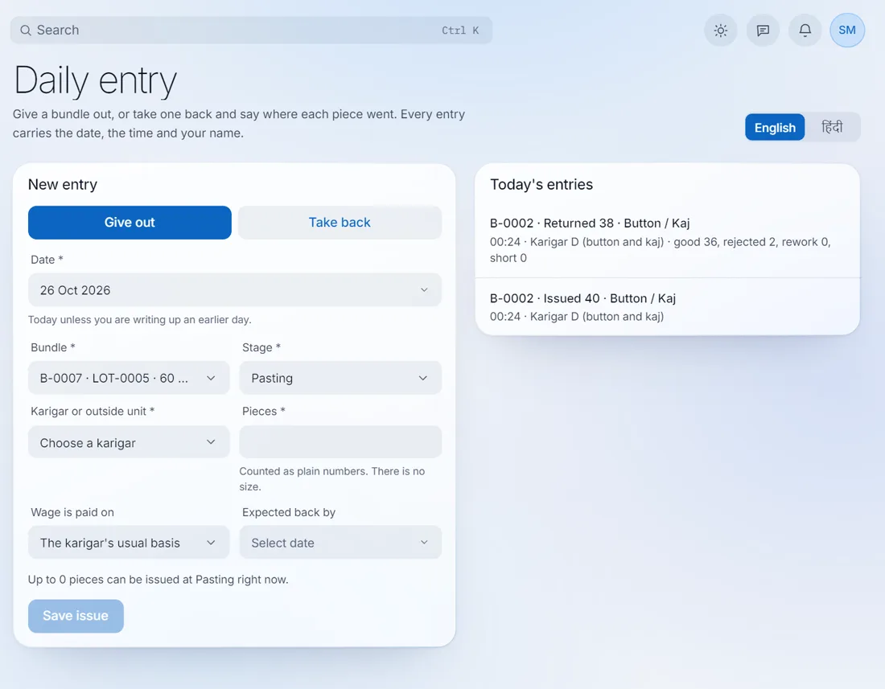
Can
- Enter give-outs and take-backs for any stage
- Add karigars and set their rates and supervisor
- Record advances, recoveries, payments and opening balances
- Create and cut lots, receive fabric, print slips
- Reverse their own entry the same day
Cannot
- Approve a deduction, write-off or close
- Hold or complete a lot
- See the change history or production settings
- Add people or change roles
Entered the wrong count? Press Reverse and say why. The wrong row stays, the reversal sits beside it, and you enter it again correctly.
Supervisor
Works the floor with a phone. Gives out, takes back, and answers for what the karigars hold.
- 1Open My floorYour stages, and the pieces out with karigars, waiting to give out, in rework and short. Tap any number to see which bundles.
- 2Scan the slipTap Scan and point the camera at the bundle's QR. No camera? Type the number.
- 3Give outPick the karigar, count with + and −, confirm. A challan prints for them to carry.
- 4Take backCount good, rejected, rework and short. Rejected pieces take a photograph. Short pieces open a case on the karigar who held them.
- 5Close the dayWrite a short handover note. It is kept for the manager and owner to read.
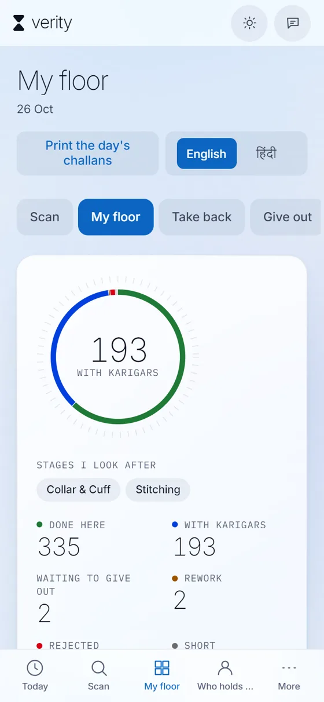
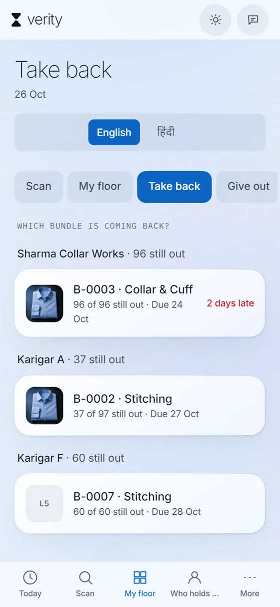
Can
- Give out and take back at their own stages, to their own karigars
- Attach a photograph to rejected or rework pieces
- Ask for a deduction, a write-off or a lot hold
- See Who holds what, and the cases on their floor
- Reverse their own entry on the same day
Cannot
- See any rate, wage or balance. No money appears anywhere
- Work at another supervisor's stages, unless covering for them
- Approve anything or edit anyone's entry
The receiver's count is the truth. Count in front of the karigar. If more comes back than went out, the screen refuses and shows both figures.
Cutting master
Turns fabric rolls into numbered bundles and prints the slips that travel with them.
- 1Open the lotLots lists what is in work and what is still a draft. Open the lot you are about to cut.
- 2Cut the lotChoose the rolls used and how many pieces go in each bundle. The metres used come off each roll's balance by themselves.
- 3Bundles number themselvesB-0001, B-0002 and on, with no gaps. Every bundle carries its own record from now on.
- 4Print the slipsFull size or a small sticker for the tie. Print only the ones not printed yet, or download a file for a Zebra label printer.
- 5Move rolls when askedSee the fabric on the shelf and move a roll when a lot needs it.
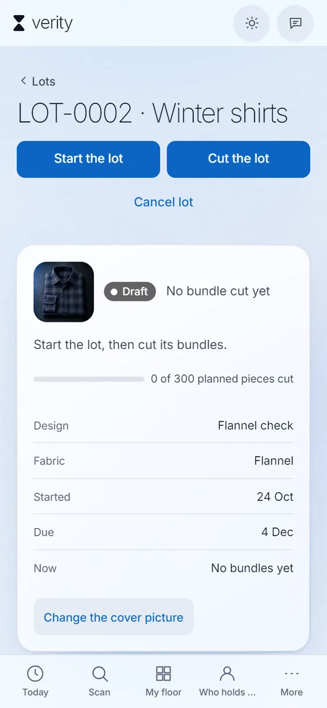
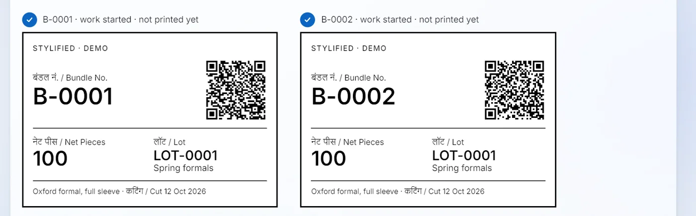
Can
- See lots and their bundles
- Cut a lot and print its slips
- See fabric rolls and move them
Cannot
- See money or any karigar rate
- Give out or take back pieces
- Set a rate card or change a lot's status
Store
Keeps the fabric shelf and the ready garments. Knows what came in, what is left and what went out.
- 1Receive rollsPick the fabric, enter the invoice, supplier, rate and metres. Each roll gets a number and a QR label to stick on it. The same invoice entered twice is warned first.
- 2Print labelsPrint every roll's label in one go, as an A4 sheet or a Zebra file.
- 3Count the shelfCount the shelf: scan or type the roll numbers, enter the metres you find, and post. Only the differences are posted, with the reason Stock-take.
- 4Take garments outReady stock shows what was made. Use Stock out for sold, dispatched or sample. More than is in stock is refused.
- 5Correct a count, with a reasonFound three extra or two torn? Correct a count needs a reason and keeps both sides on the record.
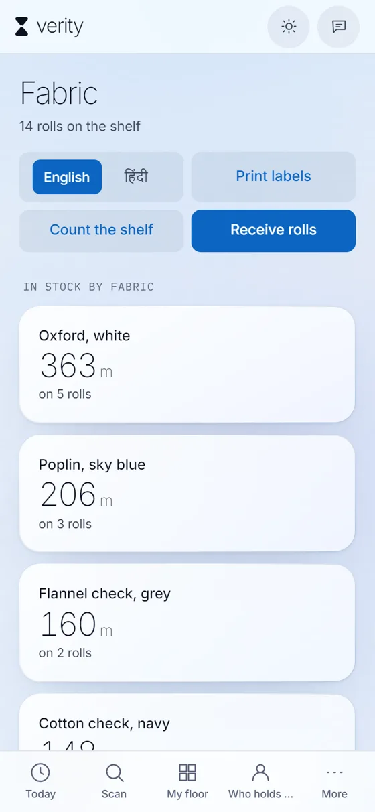
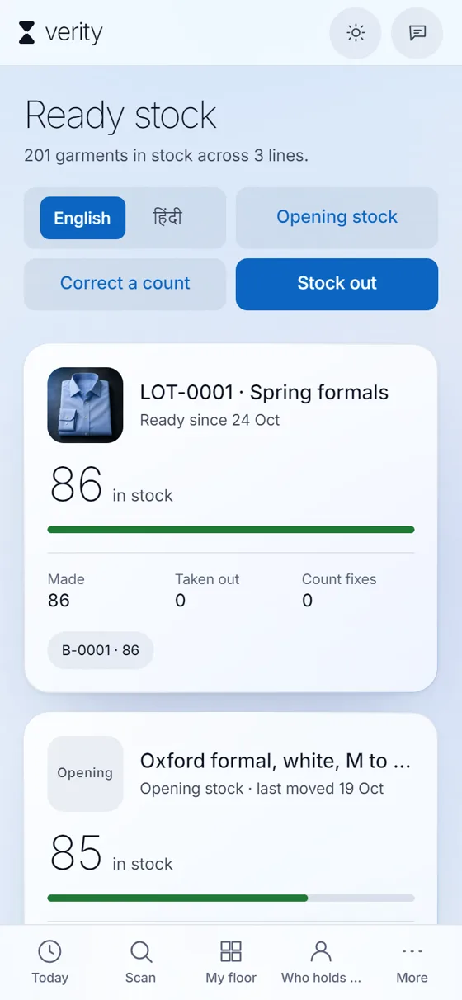
Can
- Receive rolls, print labels, move rolls, count the shelf
- Enter opening ready stock and take stock out
- Correct a ready-stock count with a reason
- See lots, bundles and the entries on them
Cannot
- See wages, balances or karigar rates
- Give out or take back pieces
- Change a lot or its rate card
Low fabric is flagged for you. The owner sets one level in settings, and Fabric marks every fabric under it, including ones with nothing left.
The same for everyone
Four things work the same way on every screen, for every role.
Signing in
Use your email, or the username the owner gave you, and your password. People without an email sign in with a username such as ravi.stylified. Forgot it? Ask the owner, who sets a new one on the Team screen.
Hindi or English
The switch sits at the top of the floor, fabric, stock and entry screens. Your choice is remembered on that phone. Names and numbers stay as they are written.
Scanning
Point the camera at a bundle slip, a roll label or a challan and the right screen opens. A hand scanner works as a keyboard, and any number can be typed.
Mistakes
Nothing is edited or deleted. A wrong entry is reversed with a reason; the original, the reversal and the person who made them all stay. Then enter it again correctly.
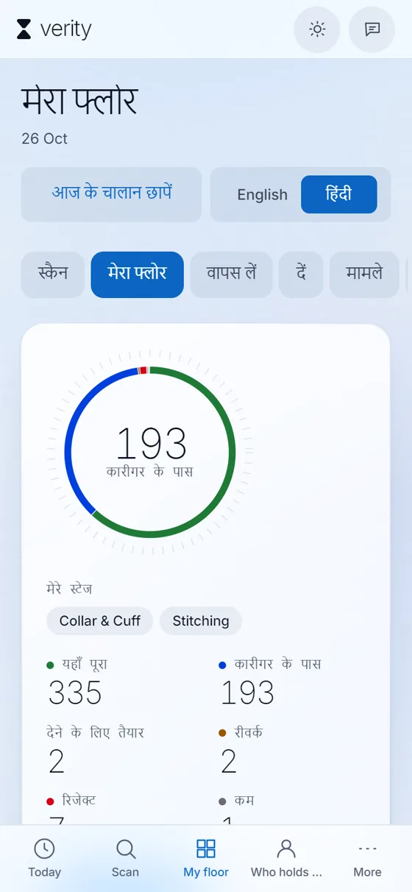
I want to…
Find the job, see who can do it and where to open it.
| I want to | Who can | Open |
|---|---|---|
| Receive fabric and print labels | Store, Munshi, Manager, Owner | Fabric › Receive rolls |
| Cut a lot and print slips | Cutting master, Munshi, Manager, Owner | Lots › the lot › Cut the lot |
| Give pieces to a karigar | Supervisor (own), Munshi, Manager, Owner | Scan, or My floor › Give out, or Daily entry |
| Take pieces back | Supervisor (own), Munshi, Manager, Owner | My floor › Take back, or Daily entry |
| Ask for a deduction or write-off | Supervisor, Munshi | On the take-back screen, or Cases |
| Approve a request | Manager (within limit), Owner | Approvals |
| Pay a karigar or give an advance | Munshi, Manager, Owner | Karigars › the karigar |
| Take finished garments out of stock | Store, Munshi, Manager, Owner | Ready stock › Stock out |
| Join two lots, sharing the cost | Munshi, Manager, Owner | The lot › What this lot cost › Join or link |
| See what a lot cost per good piece | Munshi, Manager, Owner | The lot, or Lot reports |
| Add a person or reset a password | Owner | Team › Add a person |
| See who changed what | Manager, Owner | Change history |
Questions during the first weeks: PlotArmour, team@plotarmour.in · +91 87440 69597.